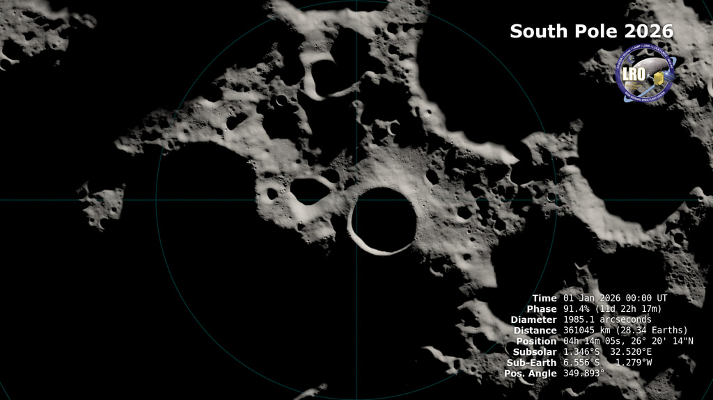

Dimostrato
Sviluppo contrattuale e prove di tecnologie collegate.
Programmi · Scheda tecnica 17
La variante lunare scelta dalla NASA per il programma Human Landing System. Il suo percorso di qualifica è distinto da quello della nave che rientra sulla Terra.
Stato al 10 ottobre 2026: In sviluppo
Leggi i dati Controlla le fonti
Riferimento: documenti citati a fondo pagina, letti con le rispettive date. Stato editoriale al 10 ottobre 2026.
HLS deve ricevere propellente, raggiungere la regione lunare, accogliere gli astronauti e riportarli dopo l’attività al suolo. La catena comprende altri veicoli e sistemi: il lander non svolge da solo ogni fase.
La variante lunare cambia requisiti rispetto a Ship terrestre. Scudo e flap per il rientro atmosferico non rappresentano il problema centrale di una nave destinata al collegamento con la superficie lunare.
Rifornimento, atterraggio, abitabilità, mobilità e prove senza equipaggio sono dipendenze reali. I calendari NASA indicano obiettivi di programma e possono cambiare in base ai risultati.
Sviluppo contrattuale e prove di tecnologie collegate.
Missioni lunari secondo l’architettura NASA datata nei capitoli Artemis.
Dimostrazione senza equipaggio e qualifica per l’allunaggio umano.

Consultazione editoriale: 10 ottobre 2026. Le date dei singoli documenti sono distinte dalla data della scheda.